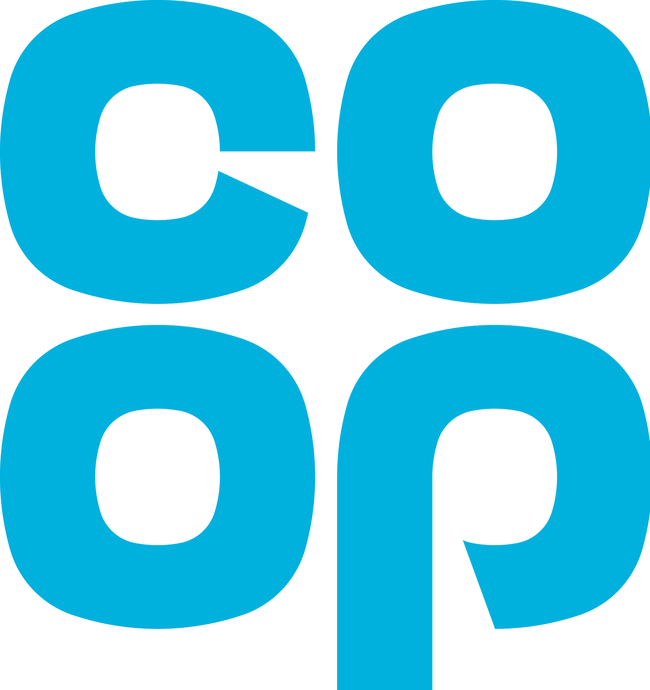
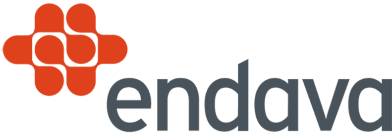

Software in Practice
June 22nd 2022 - Leeds
Following last year's online event, we have decided that 2022 is the year to bring SPA back in face-to-face format, so we will be running a one day event this year, full of sessions on modern software development topics, in the best SPA tradition
The conference will be a single track event, presented by a group of expert and engaging speakers, on 22nd June 2022, at the St George's Centre in the heart of Leeds.
The event starts at 10:30 and will run until about 18:30, including lunchtime and breaks.
We have a terrific lineup of speakers on the programme, covering a very varied range of topics:
- Quintin Balsdon who will show us how thinking about accessibility can improve more than just the user interface
- Pradeep Bhadani teaching us how to use Terraform to automate build and test of cloud infrastructure
- Keith Braithwaite talking about what we lost when XP won
- Chris Cooper-Bland who will explain why we need to think about more than just the functions of a product
- Natalia Oskina who will tell us why we should be listening to the shiest person in the room
- Andy Parker who will show us how an outage is actually an opportunity to understand more
Full details of the talks are on the programme page.
Booking
The event is free of charge to attend in person or online, but a prebooked ticket is required to attend in either form.
Click the button below to register for the event via Eventbrite.
Sponsors
We are very grateful to our three sponsors, The Co-op, Endava and Zuehlke, and would like to thank them for making the event possible. Please follow the links below to find out more about software engineering careers in these three forward looking organisations.
|  |  |